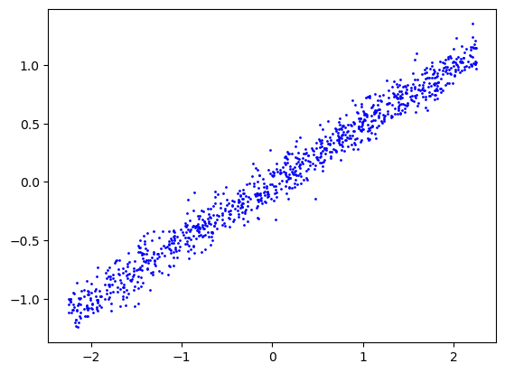
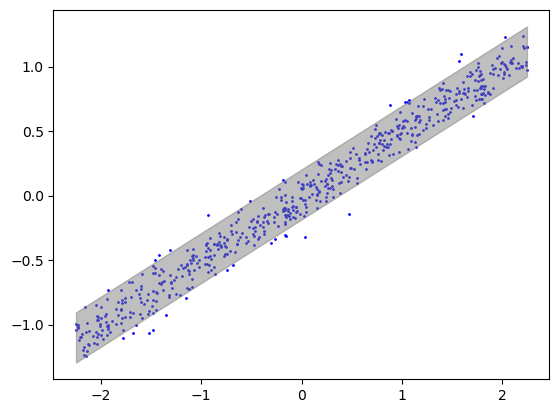
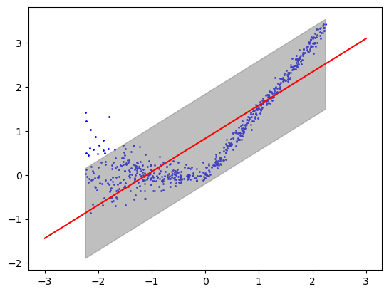
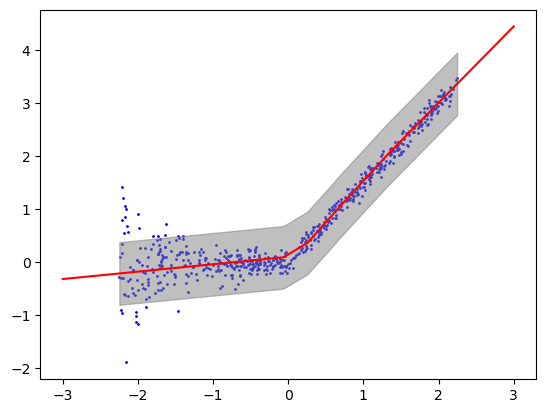
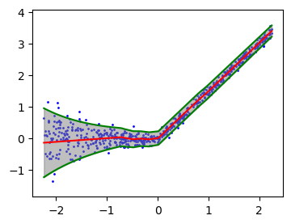
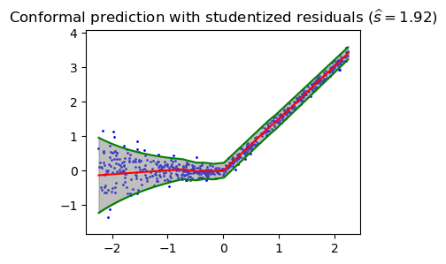
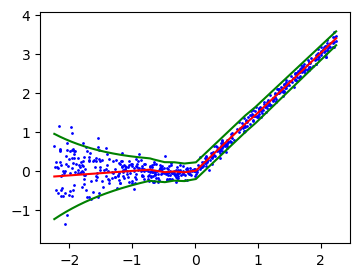

import numpy as np
import matplotlib.pyplot as plt
import scipy.stats as stats
import math
from scipy.stats import t
from sklearn.linear_model import LinearRegression
import torch
import torch.nn as nn
from torch import optim
from torch.utils.data import TensorDataset, DataLoaderLecture 6 - Conformal Inference
Define functions used throughout the experiments
def generateX(n):
x = np.random.uniform(-2.25, 2.25, n)
return(x)
def generateLinearY(x, beta, b, sigma):
n = len(x)
eps = np.random.randn(n)
y = beta*x + b + eps*sigma
return y
def generateNonlinearY(x, sigma):
def s(x):
g = [1 if x[i] > 0 else abs(x[i])**2 + 1 for i in range(len(x))]
return np.array(g)
n = len(x)
eps = np.random.randn(n)
y = 1.5*np.maximum(x, 0) + sigma * s(x) * eps
return y
def splitData(x, y, n1):
x1 = x[:n1]
y1 = y[:n1]
x2 = x[n1:]
y2 = y[n1:]
return x1, y1, x2, y2def linearPredictionInterval(xtrain, ytrain, xnew, alpha):
xtrain = xtrain.reshape(-1, 1)
n1 = xtrain.shape[0]
res = LinearRegression().fit(xtrain, ytrain)
# fit beta_hat
betahat = res.coef_
bhat = res.intercept_
# estimate of noise variance sigma_hat
sigmahat = np.sqrt( np.sum((ytrain - xtrain @ betahat - bhat)**2)/(n1-2) )
xtilde = np.hstack([xtrain, np.ones((n1, 1))])
xtx = xtilde.T @ xtilde
yhat = xnew*betahat + bhat # mean
t = stats.norm.ppf(1-alpha/2) # -1.96, 1.96
xnew1 = np.hstack([xnew.reshape(-1,1), np.ones((len(xnew), 1))])
mat = xnew1 @ np.linalg.inv(xtx) @ xnew1.T
s = sigmahat*np.sqrt(1 + mat.diagonal())
# s is the sd of y_new, var = sigma_hat^2 * (1 + x_new (X^TX)^{-1} x_new)
return np.hstack([(yhat - t*s).reshape(-1, 1), (yhat + t*s).reshape(-1,1)])
def conformalInterval(resids, ypred_new, alpha):
n = len(resids)
t = np.quantile(abs(resids), np.ceil((1-alpha)*(n+1))/n ) # shat = find the (1-alpha)*(n+1)/n quantile of |residuals|
return np.hstack([(ypred_new - t).reshape(-1, 1), (ypred_new + t).reshape(-1,1)])n = 1000
ntrain = 400
sigma = 0.1
alpha = 0.05 # 95% prediction interval for Y_newExperiment 1:
- true model is linear with homoskedastic Gaussian noise
- we fit a linear model
- we construct prediction interval using linear model
beta0 = .5
b0 = 0
x = generateX(n)
y = generateLinearY(x, beta0, b0, sigma)
xtrain, ytrain, xtest, ytest = splitData(x, y, ntrain)plt.scatter(x, y, color='blue', label='Data Points', s=1)
intervals = linearPredictionInterval(xtrain, ytrain, xtest, alpha)## plot prediction interval
sorted_ix = np.argsort(xtest)
xgrid = xtest[sorted_ix]
ygrid = ytest[sorted_ix]
interval_grid = intervals[sorted_ix, :]
plt.scatter(xgrid, ygrid, color='blue', label='Data Points', s=1)
plt.fill_between(xgrid, interval_grid[:, 0], interval_grid[:, 1], color='gray', alpha=0.5, label='Prediction Interval')
cov_test = [1 if ytest[i] >= intervals[i, 0] and ytest[i] <= intervals[i, 1] else 0 for i in range(len(ytest))]
print('Percent covered on test data: ', np.mean(cov_test))Percent covered on test data: 0.9483333333333334Experiment 2
- true model is nonlinear with heteroskedastic Gaussian noise
- we fit a linear model
- we use conformal prediction interval
x = generateX(n)
y = generateNonlinearY(x, sigma)
xtrain, ytrain, xtest, ytest = splitData(x, y, ntrain)n1 = int(ntrain/2)
xtrain1, ytrain1, xtrain2, ytrain2 = splitData(xtrain, ytrain, n1)
regressor = LinearRegression().fit(xtrain1.reshape(-1, 1), ytrain1)
resids = ytrain2 - regressor.predict(xtrain2.reshape(-1, 1))intervals = conformalInterval(resids, regressor.predict(xtest.reshape(-1, 1)), alpha)xlinspace = np.linspace(-3, 3, 1000)
ylinspace = regressor.predict(xlinspace.reshape(-1, 1))
## plot prediction intervals
sorted_ix = np.argsort(xtest)
xgrid = xtest[sorted_ix]
ygrid = ytest[sorted_ix]
interval_grid = intervals[sorted_ix, :]
plt.scatter(xgrid, ygrid, color='blue', label='Data Points', s=1)
plt.plot(xlinspace, ylinspace, color = 'red')
plt.fill_between(xgrid, interval_grid[:, 0], interval_grid[:, 1], color='gray', alpha=0.5, label='Prediction Interval')
cov_test = [1 if ytest[i] >= intervals[i, 0] and ytest[i] <= intervals[i, 1] else 0 for i in range(len(ytest))]
print('Percent covered on test data: ', np.mean(cov_test))Percent covered on test data: 0.9733333333333334Experiment 3
- true model is nonlinear with heteroskedastic Gaussian noise
- we fit a nonlinear model
- we use conformal prediction interval with score = residual
x = generateX(n)
y = generateNonlinearY(x, sigma)
xtrain, ytrain, xtest, ytest = splitData(x, y, ntrain)
n1 = int(ntrain/2)
xtrain1, ytrain1, xtrain2, ytrain2 = splitData(xtrain, ytrain, n1)## train neural network on first half of training data
class NNet(nn.Module):
def __init__(self, input_dim, hidden_dim):
super(NNet, self).__init__()
self.layer1 = nn.Linear(input_dim, hidden_dim)
self.layer2 = nn.Linear(hidden_dim, 1)
def forward(self, x):
x = self.layer1(x)
x = torch.relu(x)
x = self.layer2(x)
return x.squeeze()
x_train1 = torch.tensor(xtrain1.reshape(-1, 1), dtype=torch.float32)
y_train1 = torch.tensor(ytrain1, dtype=torch.float32)
model = NNet(1, 5)
lr = 0.1
epochs = 200
optimizer = optim.SGD(model.parameters(), lr=lr)
criterion = nn.MSELoss()
for epoch in range(epochs):
optimizer.zero_grad()
y_pred = model(x_train1)
loss = criterion(y_pred, y_train1)
loss.backward()
optimizer.step()
epoch_loss = loss.item()
if epoch % 20 == 0:
print('epoch', epoch, 'loss', f"{epoch_loss:.3}")epoch 0 loss 1.33
epoch 20 loss 0.102
epoch 40 loss 0.0586
epoch 60 loss 0.0499
epoch 80 loss 0.0483
epoch 100 loss 0.048
epoch 120 loss 0.0479
epoch 140 loss 0.0478
epoch 160 loss 0.0478
epoch 180 loss 0.0477## compute residues on second half of training data
## and prediction intervals on test data
x_train2 = torch.tensor(xtrain2.reshape(-1, 1), dtype=torch.float32)
resids = ytrain2 - model(x_train2).squeeze().detach().numpy() # scores on our calibration / D2 data
x_test = torch.tensor(xtest.reshape(-1, 1), dtype=torch.float32)
y_pred = model(x_test).squeeze().detach().numpy() # f(X_new)
intervals = conformalInterval(resids, y_pred, alpha) # f(X_new) +/- s_hat ((1-alpha)*(n+1)/n-quantile of abs(resids))## plot f
sorted_ix = np.argsort(xtest)
xgrid = xtest[sorted_ix]
ygrid = ytest[sorted_ix]
xlinspace = np.linspace(-3, 3, 1000)
xlinspace_torch = torch.tensor(xlinspace, dtype=torch.float32).reshape(-1,1)
ylinspace = model(xlinspace_torch).squeeze().detach().numpy()
interval_grid = intervals[sorted_ix, :]
plt.scatter(xgrid, ygrid, color='blue', label='Data Points', s=1)
plt.plot(xlinspace, ylinspace, color = 'red')
plt.fill_between(xgrid, interval_grid[:, 0], interval_grid[:, 1], color='gray', alpha=0.5, label='Prediction Interval')
cov_test = [1 if ytest[i] >= intervals[i, 0] and ytest[i] <= intervals[i, 1] else 0 for i in range(len(ytest))]
print('Percent covered on test data: ', np.mean(cov_test))Percent covered on test data: 0.9566666666666667Experiment 4
- true model is nonlinear with heteroskedastic Gaussian noise
- we fit a nonlinear model with heteroskedastic noise
- we use a conformal prediction interval with score = studentized residual
x = generateX(n)
y = generateNonlinearY(x, sigma)
xtrain, ytrain, xtest, ytest = splitData(x, y, ntrain)
n1 = int(ntrain/2)
xtrain1, ytrain1, xtrain2, ytrain2 = splitData(xtrain, ytrain, n1)## train neural network on first half of training data
class NNet(nn.Module):
def __init__(self, input_dim, hidden_dim):
super(NNet, self).__init__()
self.layer1 = nn.Linear(input_dim, hidden_dim)
self.mean_layer = nn.Linear(hidden_dim, 1)
self.logvar_layer = nn.Linear(hidden_dim, 1)
def forward(self, x):
x = self.layer1(x)
x = torch.relu(x)
mean = self.mean_layer(x)
logvar = self.logvar_layer(x)
return mean.squeeze(), logvar.squeeze()
def loss(self, x, mean, logvar):
var = torch.exp(logvar)
loss = torch.pow(x-mean, 2) / var + logvar
out = loss.mean()
return out
x_train1 = torch.tensor(xtrain1.reshape(-1, 1), dtype=torch.float32)
y_train1 = torch.tensor(ytrain1, dtype=torch.float32)
model = NNet(1, 20)
lr = 0.01
epochs = 200
optimizer = optim.Adam(model.parameters(), lr=lr)
for epoch in range(epochs):
optimizer.zero_grad()
mean, logvar = model(x_train1)
loss = model.loss(y_train1, mean, logvar)
loss.backward()
optimizer.step()
epoch_loss = loss.item()
if epoch % 20 == 0:
print('epoch', epoch, 'loss', f"{epoch_loss:.3}")
epoch 0 loss 3.66
epoch 20 loss 0.401
epoch 40 loss -0.218
epoch 60 loss -1.25
epoch 80 loss -2.47
epoch 100 loss -2.6
epoch 120 loss -2.69
epoch 140 loss -2.75
epoch 160 loss -2.77
epoch 180 loss -2.78def conformalResidueInterval(scores, mu, sigma, alpha):
n = len(scores)
t = np.quantile(scores, np.ceil((1-alpha)*(n+1))/n )
y_out_l = mu - t*sigma
y_out_u = mu + t*sigma
return np.hstack([y_out_l.reshape(-1, 1), y_out_u.reshape(-1, 1)])## compute residues on second half of training data
## and prediction intervals on test data
x_train2 = torch.tensor(xtrain2.reshape(-1, 1), dtype=torch.float32)
mean, logvar = model(x_train2)
mean = mean.squeeze().detach().numpy()
logvar = logvar.squeeze().detach().numpy()
# compute scores
resids = np.abs(ytrain2 - mean) / np.exp(0.5 * logvar)
# get mean and variance for intervals
x_test = torch.tensor(xtest.reshape(-1, 1), dtype=torch.float32)
mean, logvar = model(x_test)
mean = mean.squeeze().detach().numpy()
logvar = logvar.squeeze().detach().numpy()
sd = np.exp(0.5 * logvar)
intervals = conformalResidueInterval(resids, mean, sd, alpha)# note that this is larger than 1.96, which it would be if Gaussian assumption held
s_hat = np.quantile(resids, np.ceil((1-alpha)*(n+1))/n )
s_hatnp.float64(1.9150904429715403)cov_test = [1 if ytest[i] >= intervals[i, 0] and ytest[i] <= intervals[i, 1] else 0 for i in range(len(ytest))]
print('Percent covered on test data: ', np.mean(cov_test))Percent covered on test data: 0.955## plot f
sorted_ix = np.argsort(xtest)
xgrid = xtest[sorted_ix]
ygrid = ytest[sorted_ix]
interval_grid = intervals[sorted_ix, :]
xlinspace = np.linspace(xgrid.min(), xgrid.max(), 1000)
xlinspace_torch = torch.tensor(xlinspace, dtype=torch.float32).reshape(-1,1)
mean_linspace, logvar_linspace = model(xlinspace_torch)
mean_linspace = mean_linspace.squeeze().detach().numpy()
sd_linspace = np.exp(0.5 * logvar_linspace.squeeze().detach().numpy())
plt.figure(figsize=(4, 3))
plt.ylim(ygrid.min()-0.5, ygrid.max()+0.5)
plt.scatter(xgrid, ygrid, color='blue', label='Data Points', s=1)
plt.plot(xlinspace, mean_linspace, 'r-')
plt.plot(xlinspace, mean_linspace + 1.96 * sd_linspace, 'g-')
plt.plot(xlinspace, mean_linspace - 1.96 * sd_linspace, 'g-')
plt.fill_between(xgrid, interval_grid[:, 0], interval_grid[:, 1], color='gray', alpha=0.5, label='Prediction Interval')
## plot f
sorted_ix = np.argsort(xtest)
xgrid = xtest[sorted_ix]
ygrid = ytest[sorted_ix]
interval_grid = intervals[sorted_ix, :]
xlinspace = np.linspace(xgrid.min(), xgrid.max(), 1000)
xlinspace_torch = torch.tensor(xlinspace, dtype=torch.float32).reshape(-1,1)
mean_linspace, logvar_linspace = model(xlinspace_torch)
mean_linspace = mean_linspace.squeeze().detach().numpy()
sd_linspace = np.exp(0.5 * logvar_linspace.squeeze().detach().numpy())
plt.figure(figsize=(4, 3))
plt.ylim(ygrid.min()-0.5, ygrid.max()+0.5)
plt.scatter(xgrid, ygrid, color='blue', label='Data Points', s=1)
plt.plot(xlinspace, mean_linspace, 'r-')
plt.plot(xlinspace, mean_linspace + 1.96 * sd_linspace, 'g-')
plt.plot(xlinspace, mean_linspace - 1.96 * sd_linspace, 'g-')
plt.fill_between(xgrid, interval_grid[:, 0], interval_grid[:, 1], color='gray', alpha=0.5, label='Prediction Interval')
plt.title('Conformal prediction with studentized residuals ' r'$(\widehat{{s}} = {:.2f})$'.format(s_hat))Text(0.5, 1.0, 'Conformal prediction with studentized residuals $(\\widehat{s} = 1.92)$')
## plot f
sorted_ix = np.argsort(xtest)
xgrid = xtest[sorted_ix]
ygrid = ytest[sorted_ix]
interval_grid = intervals[sorted_ix, :]
xlinspace = np.linspace(xgrid.min(), xgrid.max(), 1000)
xlinspace_torch = torch.tensor(xlinspace, dtype=torch.float32).reshape(-1,1)
mean_linspace, logvar_linspace = model(xlinspace_torch)
mean_linspace = mean_linspace.squeeze().detach().numpy()
sd_linspace = np.exp(0.5 * logvar_linspace.squeeze().detach().numpy())
plt.figure(figsize=(4, 3))
plt.ylim(ygrid.min()-0.5, ygrid.max()+0.5)
plt.scatter(xgrid, ygrid, color='blue', label='Data Points', s=1)
plt.plot(xlinspace, mean_linspace, 'r-')
plt.plot(xlinspace, mean_linspace + 1.96 * sd_linspace, 'g-')
plt.plot(xlinspace, mean_linspace - 1.96 * sd_linspace, 'g-')